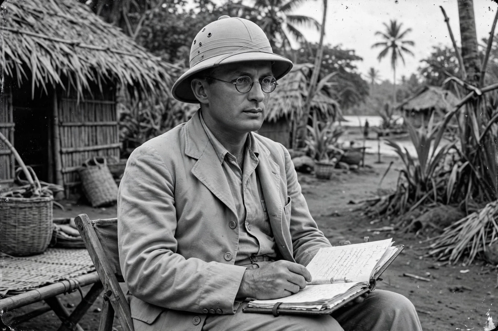

Bronisław Kasper Malinowski (7 April 1884 – 16 May 1942) was a Polish-British anthropologist whose writings on ethnography, social theory, and field research have exerted a lasting influence. He is regarded as founder of functionalism and pioneer of participant observation.

Fieldwork in Trobriand Islands during WWI produced Argonauts of the Western Pacific (1922) on the Kula ring exchange. Taught at LSE, later Yale. Posthumous diary caused controversy over private attitudes vs public method.
Functionalist explanation of institutions by needs they meet. See Anthropology, Ethnography.